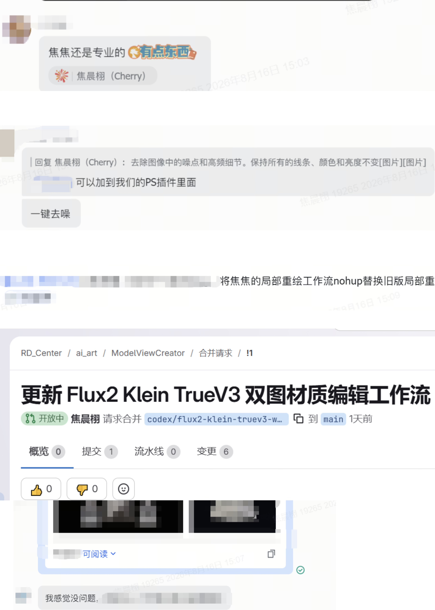
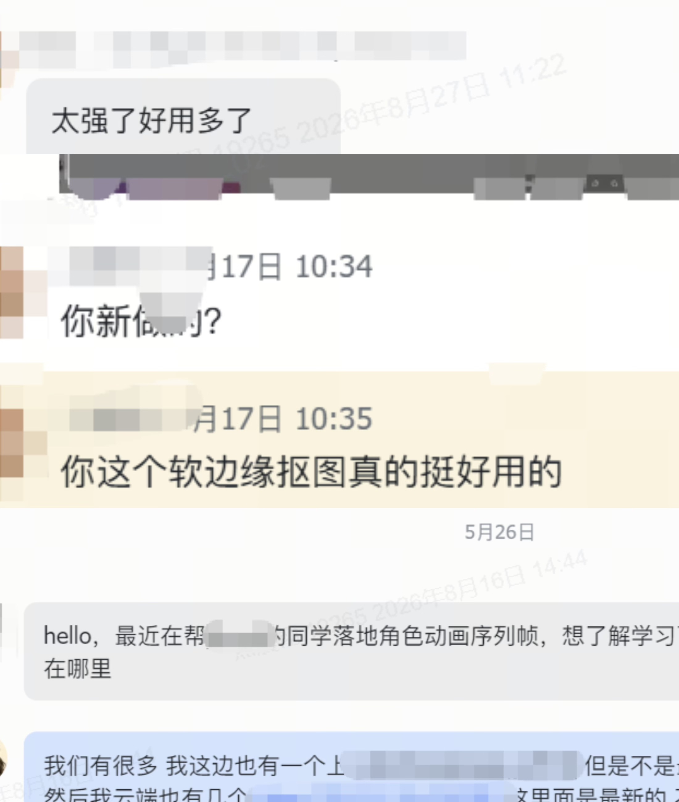

Game AI Art / Workflow Toolchain
把 AI 接进游戏 美术生产流程
角色 / 场景 / 道具 / 2D·3D 资产
面向游戏美术需求提供 AI 方案与工作流，覆盖结果评估、局部优化、2D/3D 资产交付与工具链落地。
- 游戏 AI 美术
- 工作流工具链
- 2D / 3D 资产
- ComfyUI
- PS-AI
- Blender × PS
- LoRA / Kontext
AI DESIGNER
游戏 AI 美术

美术判断，流程落地。
从 AI 方案验证到工具链上线，连接 2D 与 3D 资产生产。
Role Fit
游戏 AI 美术 / 工具链 / 2D+3D 资产
面向角色、场景、图标、道具、抠图、阴影和 3D 贴图需求，提出 AI 方案并提供可复用工作流。
覆盖 ComfyUI、PS-AI、Photoshop 与 Blender，完成从方案验证、结果筛选、局部优化到资产交付的闭环。
Internship Track
实习经历
从视觉设计到 AIGC 工作流落地
面向游戏项目的角色、场景、图标、道具、抠图、阴影与自研 3D 软件需求，提出 AI 方案并提供工作流，协助完成从验证到上线。
核心数据
6 个月
实习周期
10 条
定制 ComfyUI 工作流
2 天
3D 贴图流程优化
1 月内
软边缘流程近千次复用
- 围绕多类游戏美术资产提出 AI 方案并上线 10 条项目定制 ComfyUI 工作流，覆盖角色、场景、图标、道具、抠图、阴影和 3D 贴图；软边缘流程上线公司平台 1 月内被近千次复用。
- 接手前期迭代约 1 个月仍未达到使用要求的 3D 贴图工作流，2 天完成优化并替换现有核心功能，打通双图材质编辑、局部重绘、贴图保存与输出回写。
- 针对原有算法阴影烘焙效果不理想，提出 Blender 输出 AO/阴影、Photoshop 保留可编辑阴影与算法对齐的方案，替代原流程并沿用至今，常规需求约 1 天完成。
- 将 PS-AI 经验迁移至团队，提出 PS-AI 内置化方向并推动 Blender / Unity / UE5 结合 AI 延伸，入职 1 个月获专家级组长“超越预期”评价。
围绕游戏项目 AI 美术生产，参与 PS-AI 一体化插件、实时绘画、局部重绘和 LoRA / Kontext 训练集验证。
核心数据
5 个月
项目支持周期
PS-AI
插件 / 实时绘画
1–2 小时
单案美宣合成
- 设计并开发 PS-AI 一体化插件，将 ComfyUI 工作流集成至 Photoshop，支持《权剑传说》《问道》的实时绘画、单/多图编辑与局部重绘。
- 围绕《问道》→《挖宝》进行风格转换，借助姿势与镜头控制完成角色动作迁移、多角色与场景风格转换及 PS 美宣合成，单案 1–2 小时交付。
- 围绕《权剑传说》草图转完整稿，参与 LoRA / Kontext 训练集整理与方案验证，针对 16 对数据结构和细节不一致完成结构补全、高光阴影及建筑道具泛化测试。
参与儿童会员活动设计、IP 人物生成和投放视觉，积累构图、色彩、光影与画面反馈判断经验。
核心数据
160 张/月
投放图产出
2 天
完成 4 个主题
3 个月
运营视觉实习
- 主导六一 AI 换装生成与主页 IP 人物生成，月产出投放图约 160 张，平均 2 天完成 4 个主题。
- 从运营设计、角色视觉和页面呈现中积累对构图、色彩、光影和用户反馈的判断经验。
Selected Works
三条主线项目
先看项目方向与交付链路，完整作品展示统一放在下方的岗位相关证据中。
主线项目
优先展示 AI 2D 资产、3D 场景转 2D 交付和自研 3D 贴图工具链三条可交付链路。
AI 2D 资产处理｜角色 / 毛发 / 半透明素材
AI 2D Assets / 2026
围绕角色、毛发和半透明素材整理 AI 后处理与批量抠图流程，沉淀为可复用的 ComfyUI 工作流。
查看证据
Blender × Photoshop｜3D 阴影转 2D 交付
Blender × PS / 2026
基于项目已有 Blender 场景输出 AO、接触阴影和空间层次，再整理为 Photoshop 可编辑图层。
查看证据
3D 贴图工具链｜自研软件流程重构
3D Texture Tooling / 2026
参与公司自研 3D 贴图软件 V3 迭代，重构双图材质编辑、局部重绘、贴图保存和输出回写流程。
查看证据
补充案例入口
ComfyUI 工作流沉淀
10 条工作流 / 7 类资产 / 1 月内近千次复用
PS-AI 美术协作
PS-AI 插件 / ComfyUI 接入 / 实时绘画
LoRA / Kontext 训练与风格适配
训练集整理 / 结果验证 / 草图转完整稿
完整实习经历
游戏 AI 美术 / 工具链 / 2D-3D 资产
补充 ComfyUI、PS-AI、LoRA 和 AI 美术协作证据，说明工具如何进入真实生产。
Evidence Gateway
岗位相关证据
优先看三条可交付链路：AI 2D 资产处理、Blender × Photoshop 交付、3D 贴图工具链；下方补充 ComfyUI、PS-AI、LoRA 与 Kontext 记录。
AI 2D 资产处理：角色 / 毛发 / 半透明素材
围绕角色、毛发、半透明边缘和动画序列整理 AI 后处理与批量抠图流程，沉淀为可运行的 ComfyUI 工作流。
长期动画素材需求
批量本地运行
7 天内使用次数前五
- 背景
- 角色动画、毛发、半透明边缘和带阴影素材需要批量抠图。
- 判断
- 根据轮廓干净度、发丝细节、半透明边缘和 Alpha 过渡筛选结果。
- 流程
- 用双重抠图节点提取透明底，叠加半透明保留、边缘校色、批量命名和本地运行说明。
- 结果
- 长期复用解决软边缘与半透明批量抠图卡点；上线公共平台后 7 天内使用次数进入前五。

Blender × Photoshop：3D 阴影转 2D 可编辑交付
利用项目已有 Blender 场景信息输出 AO、接触阴影和空间层次，再整理成 Photoshop 可编辑图层，支撑后续美术制作。
约 1 天常规交付
AO / 阴影独立图层
PSD可编辑交付
- 背景
- 3D 场景中的阴影、AO 和空间层次需要转成 2D 可交付素材。
- 判断
- 利用已有 Blender 场景中的真实 3D 信息，输出 AO、接触阴影和遮挡层次。
- 流程
- 固定相机与画幅，烘焙 AO / 阴影层并导出全画幅素材；PS 自动识别、命名、分组并收紧外框。
- 结果
- 常规需求约 1 天交付，已投入项目使用；获得“超越预期”反馈。


3D 贴图工具链：自研软件流程重构
参与公司自研 3D 贴图软件 V3 迭代，重构双图材质编辑、局部重绘和输出回写，打通贴图生成到平台调用的流程。
V3流程上线
双图材质编辑
替换旧版流程
- 背景
- 项目需要稳定的上贴图、材质编辑和局部重绘流程。
- 判断
- 通过白膜与贴图对照、双图材质编辑和局部回写确认结果质量。
- 流程
- 重构 TrueV3 双图流程，串联本地绘制、云端生成、局部重绘、保存和平台调用。
- 结果
- 旧版流程替换后上线，进入公司自研 3D 贴图软件并支持项目使用。

Supporting Evidence
补充证据：AI 美术与工作流
补充 ComfyUI 工作流复用、PS-AI 插件协作、AI 美宣方案和 LoRA / Kontext 训练集整理，说明工具如何进入真实生产。
ComfyUI 工作流沉淀与复用
2026.04-08，搭建并上线 10 条项目定制 ComfyUI 工作流，覆盖角色、场景、图标、道具、抠图、阴影和 3D 贴图；软边缘抠图流程上线公司平台 1 月内被近千次复用。
5 个月
沉淀周期：2026.04-08
10 条
上线数量：项目定制工作流
7 类
覆盖资产：角色 / 场景 / 图标 / 道具 / 抠图 / 阴影 / 3D 贴图
近千次
平台复用：软边缘流程上线 1 月内
2 天
3D 贴图：优化并替换核心功能
约 1 天
常规交付：Blender 阴影烘焙

AI 美术流程与 PS-AI 协作
围绕《问道》《权剑传说》的场景、角色和道具需求，展示 PS-AI 插件、LoRA / Kontext 训练集整理与结果验证。
项目范围
《问道》/《权剑传说》
工具链
PS-AI / ComfyUI
训练验证
LoRA / Kontext
交付方式
实时绘画 / 局部重绘

Local Docs
相关案例入口
补充 AI 美术、场景训练和立绘细化案例；大文件统一进入页面查看，不直连下载地址。